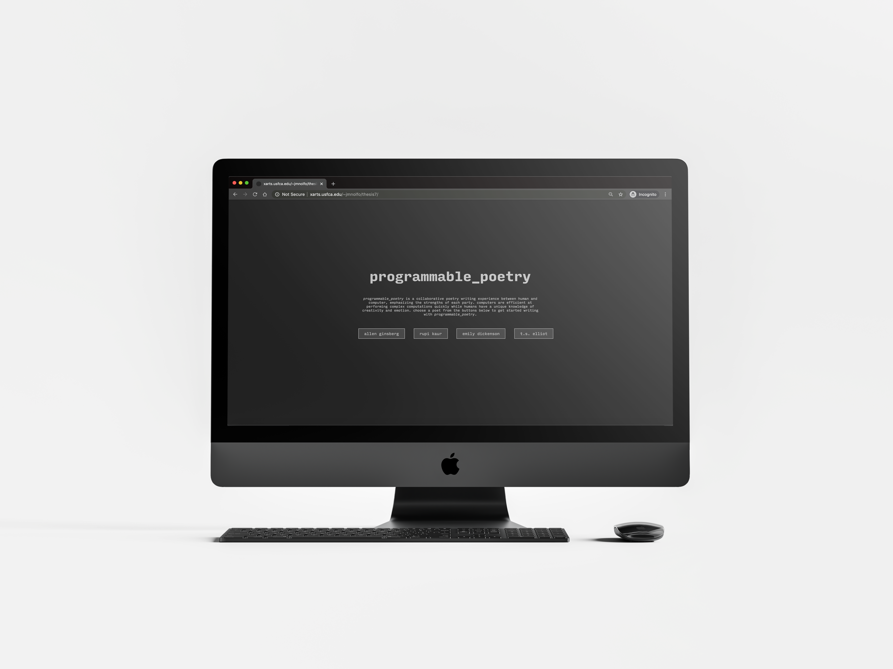
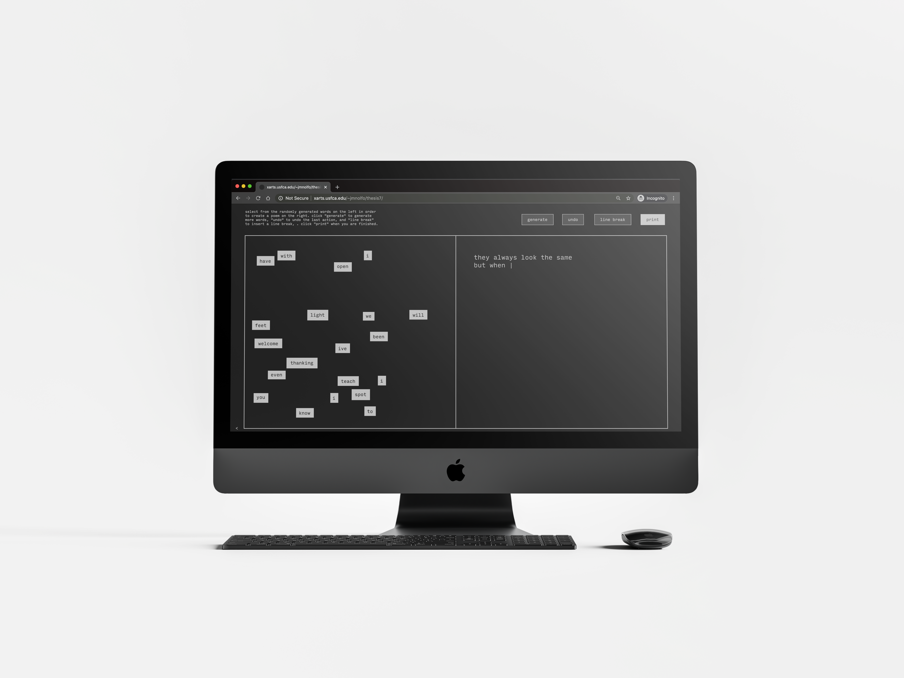
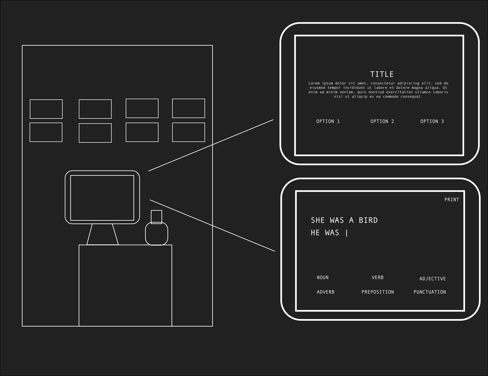
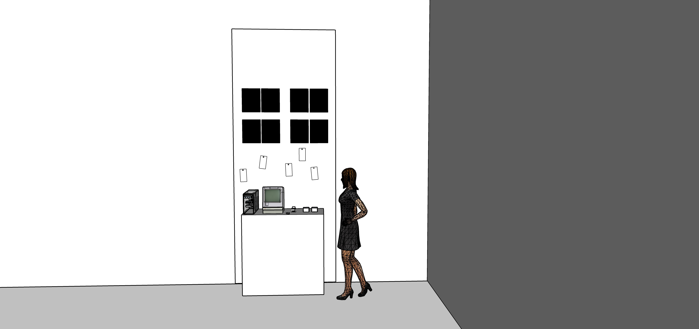
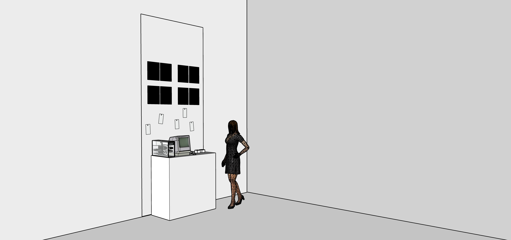
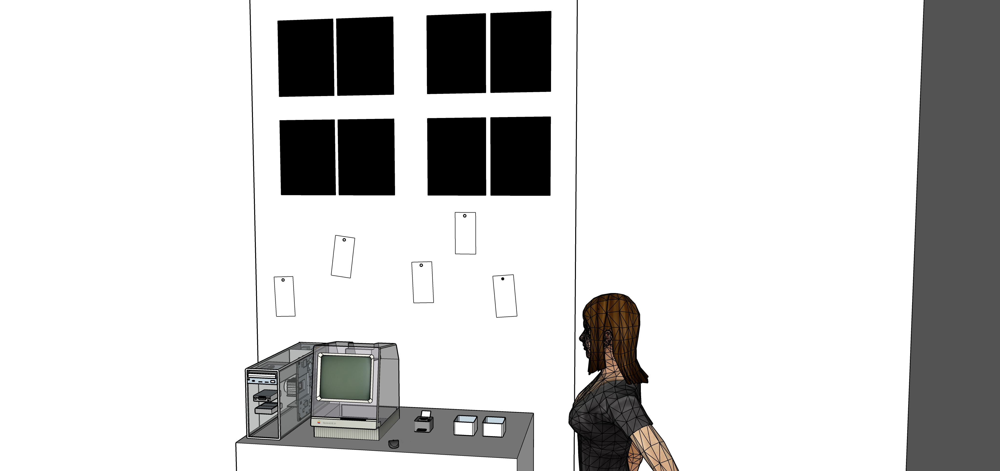
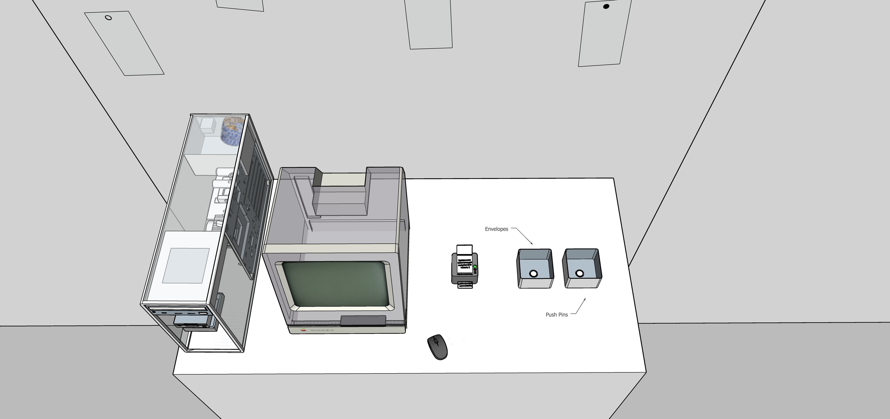
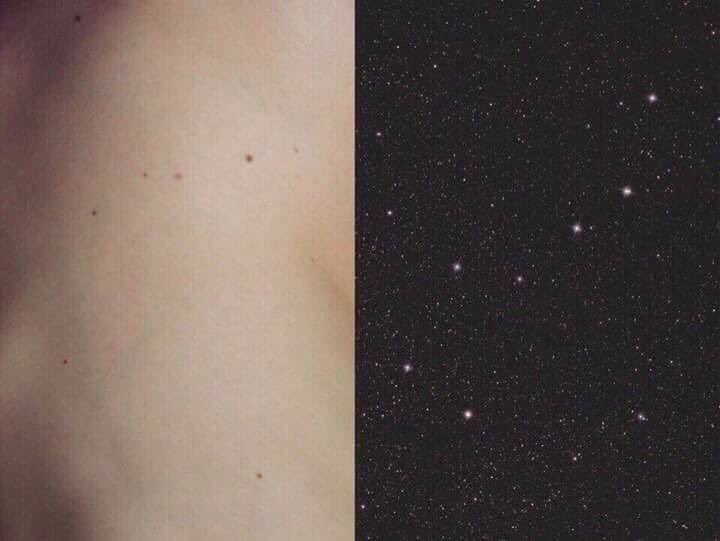
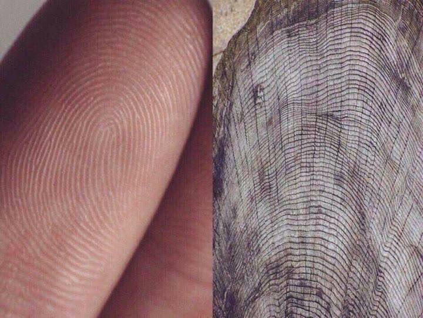

programmable_poetry
try programmable_poetryprogrammable_poetry is a collaborative poetry-writing experience between user and computer designed to cultivate a relationship of connection and understanding between human and machine. Poetry is a form of literature that expresses human emotions in very raw and intimate ways, but often requires structure and order. Based on magnetic poetry sets and emphasizing the unique skills of both human and computer, programmable_poetry begins with a program that generates random words from selected works of the user’s chosen poet. The user is then encouraged to use their own creativity to arrange the words into a poem. Once a poem is completed, it is attributed to both authors, the user and the program, and is placed into code that would digitally “print” the poem to the computer console. Lastly, the user is welcome to explore the gallery where they can place their piece among poems written by other users have. The gallery is accompanied by a series of photographs of both the human body and internal hardware, stripping both down to their most intimate parts in order to create a feeling of connection between man and machine.
As a digital artist, programmer, and millennial, there are few areas of my life that are not consumed by technology. Writing poetry is one of those areas. The act simply involves my notebook, a pen, and a thought: no algorithms or coding necessary. Because poetry, both the act of writing it and the actual poem, still feel so unabashedly human in a world laden with tech, I wanted to explore how poetry and technology could coexist. I’ve witnessed varying degrees of technophobia, a fear, dislike, or avoidance of new technology, in my grandparents, the computer science students I tutor, myself, and all around me. Technophobia is said to affect all people to a certain degree. With programmable_poetry, I am aiming to strengthen the user’s relationship with technology through collaboration and understanding. I think building this relationship is essential in a world that is so deeply entangled with technology.

homepage
poetry writing screen

digital gallery wall
video documentation

visual comparison between wrist and internal hardware

visual comparison between gear and female breast

visual comparison between the palm of a hand and motherboard

visual comparison between internal hardware and armpit
PROCESS
This project began with the desire to explore the relationship between humans and computers and how that relationship can be improved, leading to this framing question: How can poetry and imagery be used to cultivate a relationship of collaboration, rather than fear, between humans and technology? What I found in my research was that the coexistence of poetry and technology is something that is already being explored, rather it be a human trying to emulate technology with code poetry or a computer trying to emulate human emotions with AI generated poetry. What hadn't been explored, however, was the potential collaboration between human and computer in order to write a poem together.
I developed an initial mockup of the program, following a clean, tech aesthetic and installation mockups that included a transparent monitor and a thermal paper printer for the poems to be printed and hung up with tacks.

program design mockup
   exhibition installation mockup
In addition to the poetry-writing program, I wanted to include a visual element to the projet in the form of photography. I was inspired by this set of photos what show visual comparisons between the human body and nature. I think it is often easy to find ourselves in and connect with nature, but more difficult to do the same with technology. For my photographs, I deconstructed a VCR and took pictures of its inner harware. I additionally used myself as a model for the nude human body photos, managing to show both the human body and technology in their most raw and intimate forms without the covers and clothes we use to hide them.
 photography inspiration
However, when COVID-19 caused classes to go online and the in-person exhibition to be moved digitally, I had to pivot to an online install, which ushered in the addition of video documentation, a digital gallery wall, at-home printing, and more rounds of user-testing to fine-tune the program. The resulting project can be used entirely online and remote from the digital exhibition, focuses more deeply on the user's interaction with the computer, and still manages to maintain a sense of community in the digital gallery.
annotated bibliography of research sources